读完本文，你应该能清楚回答：为什么在次顶层特征上做自回归，比在 token 上猜更轻松？ 不把「刚采出来的 token」喂回去会发生什么？静态树浪费在哪、动态树的 value 怎么算？ EAGLE-3 为什么敢删掉 \(l_{\text{fea}}\)，又为什么必须上多层特征融合？ 文中核心图尽量用论文原图；需要补充直觉时再画彩色示意。
Draft–Verify + 拒绝采样：草稿只影响速度，不影响分布。
特征级自回归 + shifted-token，消解特征不确定性。
用草稿置信度近似接受率，动态扩展 / 剪枝草稿树。
去特征约束、多层融合、Training-Time Test，加速比随数据上涨。
一、地基：加速比只取决于「猜得有多像」
自回归解码每吐一个 token 就要把整份权重从 HBM 搬进计算单元一次——batch=1 时 GPU 算力大量闲置， 瓶颈在内存带宽。投机解码的解法是：用廉价草稿器先提议 \(\gamma\) 个候选，再用目标模型 一次前向并行验证整块草稿。验证规则是经典拒绝采样：草稿 token \(v\) 以 \(\min\!\bigl(1,\, p(v)/q(v)\bigr)\) 被接受；一旦拒绝，从残差 \(\mathrm{norm}\bigl(\max(p-q,0)\bigr)\) 重采样，并丢弃后续草稿。可以证明最终输出严格服从目标分布 \(p\)——草稿器再烂也只慢，不会写歪。
因此整条技术线的主矛盾很干净：提高草稿与目标的分布重叠 \(\alpha\)，同时把 \(T_{\text{draft}}\) 压到足够低。平均每轮接受长度大致是 \(\tau \approx (1-\alpha^{\gamma+1})/(1-\alpha)\)（链式草稿），加速比随 \(\alpha\) 陡增、随 \(\gamma\) 缓增。 EAGLE 家族的每一步升级，本质上都在抬 \(\alpha\)，或在同样 \(\alpha\) 下把验证预算花得更聪明。
{I, love, cats, dogs, to, eat, pizza, very, <eos>}，
已确认前缀「I love」。目标分布 \(p(\cdot\mid\text{I love})\) 近似为：
cats 52%、dogs 19%、to 9%、eat 7%、pizza 5%、其余摊薄。后面每讲到「边缘 vs 条件」「树怎么长」，
都回到这个例子。
二、EAGLE：在特征空间里做外推
独立小模型当草稿器有三个硬伤：同系列未必有合适尺寸；指令模板不一致时对齐困难；小模型本身的前向也不便宜。 EAGLE（Extrapolation Algorithm for Greater Language-model Efficiency，ICML 2024）换了一条路： 不另起炉灶，直接借用目标模型次顶层（LM head 之前）的特征做自回归外推。
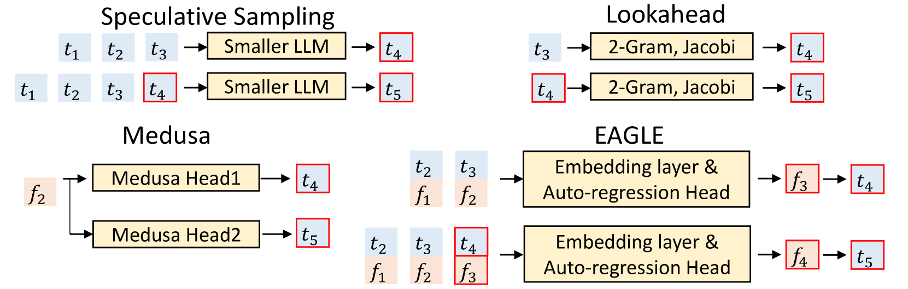
2.1 两个关键观察
论文开篇就钉死了两件事。第一，特征级自回归比 token 级容易：次顶层特征是连续、结构化的表示， 预测「下一个隐藏状态」的回归任务，通常比在巨大词表上猜离散 token 更稳。第二， 采样引入的不确定性会毁了特征预测——同一条特征序列后面可以分叉出完全不同的续写。
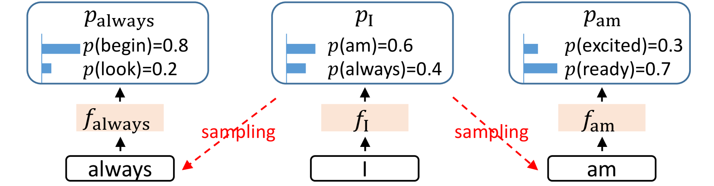
用我们的玩具例子把「边缘 vs 条件」写死。若不告诉草稿器下一步采了什么，它要拟合的是：
「I love」之后 cats 与 dogs 各占大约一半概率质量，后续特征一个偏「动物名词后接 eat / pizza」， 一个偏「动物名词后接 to …」——均值落在两者之间，什么都不像。把采样结果 \(e(y_k)\) 喂进去之后， 拟合对象变成单峰条件分布 \(p(h^{(k)}\mid x,y_k)\)。论文实测：只喂特征大约 1.9×， 特征 + shifted-token 提到约 2.8×——这一步几乎是 EAGLE-1 最大的单点收益。
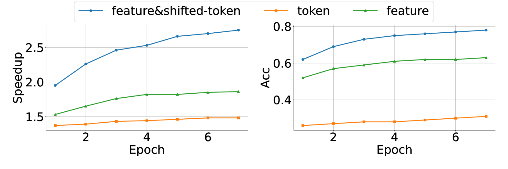
2.2 草稿器长什么样
记 \(f_t\) 为目标模型在位置 \(t\)、进入 LM head 之前的特征，\(e(\cdot)\) 为词嵌入（与 LM head 一样直接复用目标模型、冻结）。 草稿器只训两块：一个 \(2d\to d\) 的全连接层，加上一层 decoder：
沿用「I love」：目标模型上一轮已经算出真值 \(f_{\text{I}}\)、\(f_{\text{love}}\)，并采出了当前最后一个 token
love。草稿三步可以展开成：
- 第 1 步：\(g([f_{\text{love}}; e(\text{love})])\to f^{(1)}\to\) LM head \(\to\)
cats - 第 2 步：\(g([f^{(1)}; e(\text{cats})])\to f^{(2)}\to\) LM head \(\to\)
eat - 第 3 步：\(g([f^{(2)}; e(\text{eat})])\to f^{(3)}\to\) LM head \(\to\)
pizza
三步串行前向换来草稿 cats | eat | pizza，再交给目标模型一次并行验证。
训练时损失是特征回归（Smooth L1）与 token 蒸馏（交叉熵）的加权和——特征损失让多步外推时输入分布不至于漂太远；
token 项则是「\(\hat{p}\) vs 真词 / 教师分布」的 CE，细节见下文 EAGLE-3 小节与
交叉熵是什么。
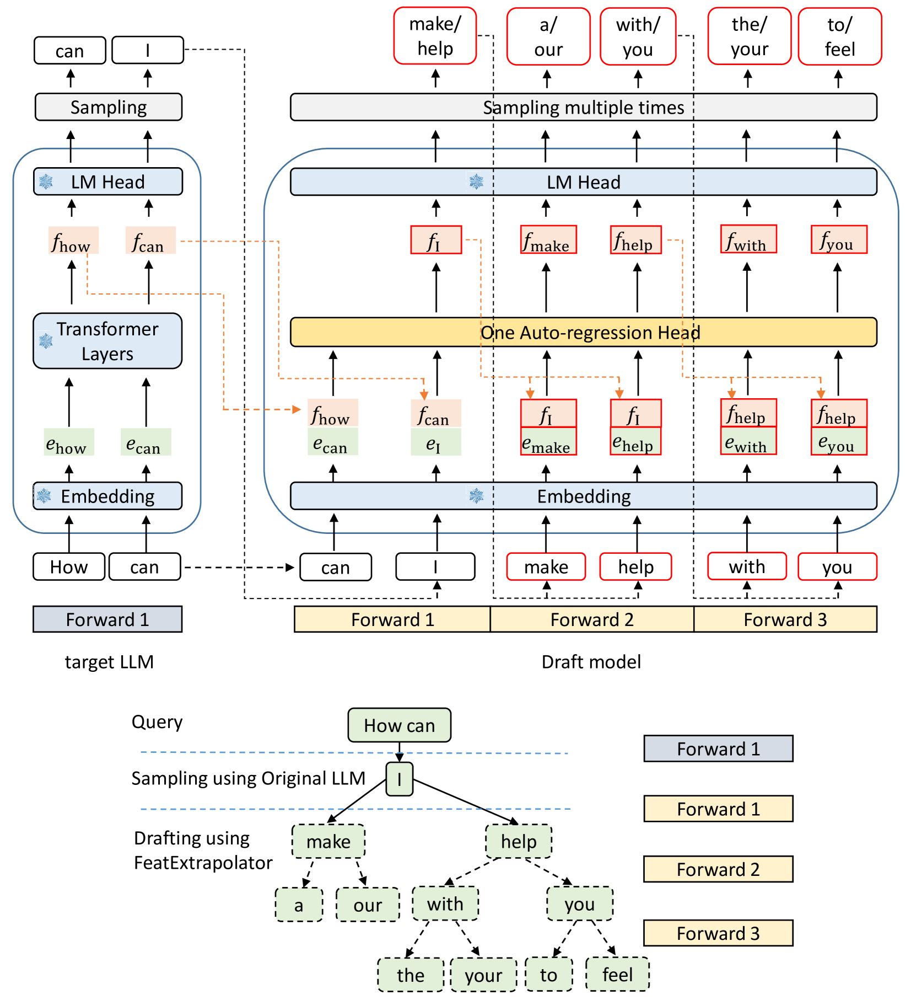
2.3 静态树验证：链断了还能换枝
EAGLE-1 已经不用纯链：每个位置取 top-\(k\)，用 tree attention 一次验证整棵树。 链上某个节点被拒，旁支仍可能存活——这比「一处拒绝、后面全扔」浪费少得多。 但树的形状是手工固定的：难猜的上下文和易猜的上下文共用同一套拓扑，预算分配必然粗糙。 这正是 EAGLE-2 要动刀的地方。
三、EAGLE-2：让树跟着上下文长
EAGLE-2（EMNLP 2024）不改草稿器训练，也不改验证规则，只改草稿树怎么长、验证时带哪些节点。 核心观察有两层。
3.1 接受率既看位置，更看上下文
静态树之所以「左上密、右下疏」，是因为平均而言越靠前的节点越好猜。但同一位置上的接受率方差很大—— 有的 query 第一步几乎必中，有的 query 第一步就在掷骰子。固定拓扑会在「10+2=」这种高置信场景里 浪费名额给几乎不可能的旁支，又在难猜场景里过早剪枝。
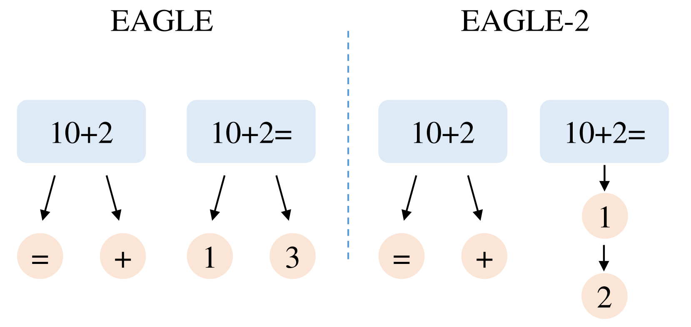
3.2 草稿置信度 ≈ 接受率
要做动态树，必须在不调用目标模型的前提下估计「这个草稿 token 会不会被接受」。 EAGLE 的校准性很好：草稿模型给出的概率（confidence）与真实接受率高度正相关—— 置信度 <0.05 的节点接受率约 0.04，>0.95 的约 0.98。于是可以用草稿自身的 softmax 概率当代理信号，零额外开销。
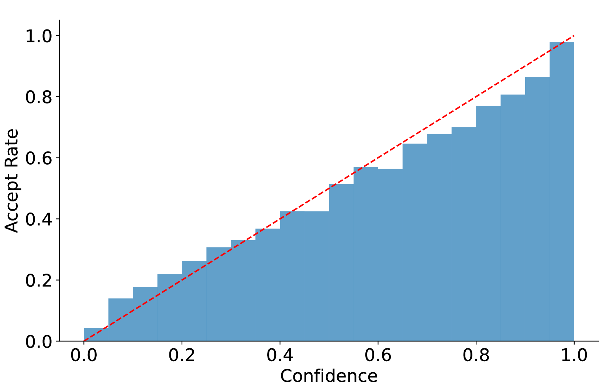
3.3 Expansion + Rerank
动态树分两阶段。记节点 \(v\) 的草稿概率为 \(c(v)\)，从根到 \(v\) 的路径乘积为
Expansion：每一层只把当前层 \(V\) 最高的 top-\(k\) 节点送进草稿器继续扩，避免在低价值树枝上烧前向。 Rerank：整树长完后，按 \(V\) 全局挑出预算内的节点展平成验证序列，并按祖先关系写 tree attention mask—— 不同分支互不可见，同一路径上仍是因果依赖。
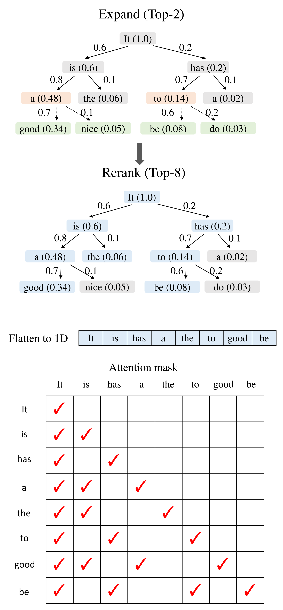
效果上，EAGLE-2 在保持无损的前提下，把 EAGLE-1 的加速比再抬一截（Vicuna-13B 上大致从 ~3× 到 ~4× 量级）。 草稿器本身没变聪明，是验证预算的分配变聪明了。
四、EAGLE-3：拆掉天花板，让数据真正管用
EAGLE-3（NeurIPS 2025）面对的问题换了：社区已经习惯「堆数据换智能」，但把同样的缩放逻辑套到 EAGLE 草稿器上， 收益很快饱和。作者把病灶定位到「特征预测」这个约束本身。
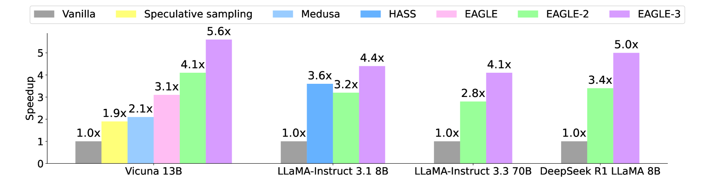
4.1 为什么「预测特征」会卡住缩放
EAGLE / EAGLE-2 的草稿输出必须贴近目标次顶层特征，损失里有 \(l_{\text{fea}}+l_{\text{token}}\)。 \(l_{\text{fea}}\) 的好处是：只训单步也能泛化到多步——因为下一步输入仍落在「像真特征」的流形附近。 坏处是：特征回归是额外约束，草稿器表达能力被钉死，堆数据也抬不高上限。
若直接删掉 \(l_{\text{fea}}\)、只留 token 损失：第一步的 \(0\textrm{-}\alpha\)（输入全是真特征时的接受率）确实随数据上涨； 但草稿输出变成自由向量 \(\hat{a}_{t+1}\)，与真特征 \(f_{t+1}\) 不再同分布——第二步把 \(\hat{a}\) 当输入时， \(1\textrm{-}\alpha\) 崩盘。这就是典型的 train–test mismatch / 误差累积。
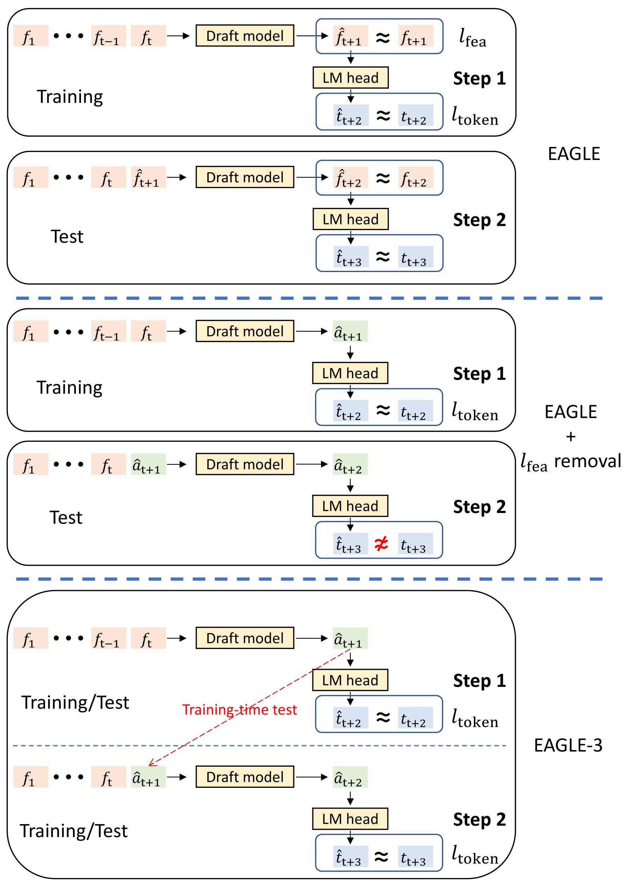
4.2 Training-Time Test：训练时就跑推理 rollout
EAGLE-3 的做法是：训练阶段完整模拟多步草稿——Step 1 用目标融合特征，Step 2/3… 把草稿自己刚产出的 \(a\) 接回去继续训。注意力 mask 也要跟着改：第一轮是普通下三角； 后续模拟步里，草稿预测 token 与原始上下文呈树状依赖，mask 按「只能看见自己的祖先」来写。 这样模型学会的不是「假设前面特征完美时该怎么预测」，而是「前面已经是自己的糊输出时，仍要给出此刻最合理的 token」。
4.2.1 Token 损失到底在对齐什么：硬标签 vs 软蒸馏
去掉 \(l_{\text{fea}}\) 之后，EAGLE-3 的监督几乎只剩 \(l_{\text{token}}\)。 这里容易混成两件事：一是「接受率」——那是推理验收指标，一般不当可微 loss； 二是「词表上的交叉熵」——那才是训练目标。 TTT 模拟约 5 步，不是把 5 步概率拼成一条再算一次，而是： 每一轮、每一个要预测的位置，各自产出一份词表分布 \(\hat{p}\)，各自算一次 CE，再求和（或加权和）。
草稿侧始终是同一条链路：\(a \xrightarrow{\text{LM head}} \text{logits} \xrightarrow{\text{softmax}} \hat{p}\in\mathbb{R}^{|V|}\)。 \(\hat{p}\) 是当前这一个位置上「下一个词」的完整概率（和为 1），不是 5 步平均。 标签则在实现里二选一（或按仓库配置二选一），不是两个 CE 同时各算一遍硬拼：
| 方式 | 标签是什么 | Loss | 在教草稿什么 |
|---|---|---|---|
| 硬标签 | 训练序列真 token \(y\) 的 one-hot | \(\mathrm{CE}(y,\hat{p})=-\log\hat{p}(y)\) | 把概率质量尽量堆到「唯一正确词」上 |
| 软蒸馏 | 目标模型同位置整份分布 \(p\) | \(\mathrm{CE}(p,\hat{p})=-\sum_v p(v)\log\hat{p}(v)\) | 连「次优词 / 相对排序」一起模仿目标模型 |
EAGLE-1 原文里的 \(L_{\text{cls}}\) 用的是软对齐味道更浓的写法：把预测特征与真特征各自过共享 LM head， 再对两份 softmax 分布做交叉熵（并设 \(w_{\text{cls}}=0.1\) 与 Smooth L1 特征回归加权）。 EAGLE-3 去掉特征回归后，开源实现（官方 EAGLE / SpecForge 等）常见仍是 token 级 CE / 蒸馏 CE； 具体硬标签还是软分布，以你用的训练脚本为准，但数学对象都是「一份 \(\hat{p}\) vs 一份标签分布」。
4.3 多层特征融合：次顶层不够看「再下一个」
次顶层特征与「下一个 token 的 logits」几乎一一对应（满秩 LM head 下信息对齐 next-token）。 但草稿器要猜的是 next-next、next-next-next……只盯最后一层，等于用「只够看一步」的表示去推多步。 去掉特征回归约束之后，EAGLE-3 改从目标模型抽 低 / 中 / 高 三层隐藏状态 \(l,m,h\)，拼接后经 FC 压回维度 \(k\)，得到融合特征 \(g\)：
直觉上：浅层偏词法与局部句式，中层偏语义关系，深层偏最终决策。草稿头同时看见三层， 比只看「即将变成 logits 的那一层」更适合做多步外推。
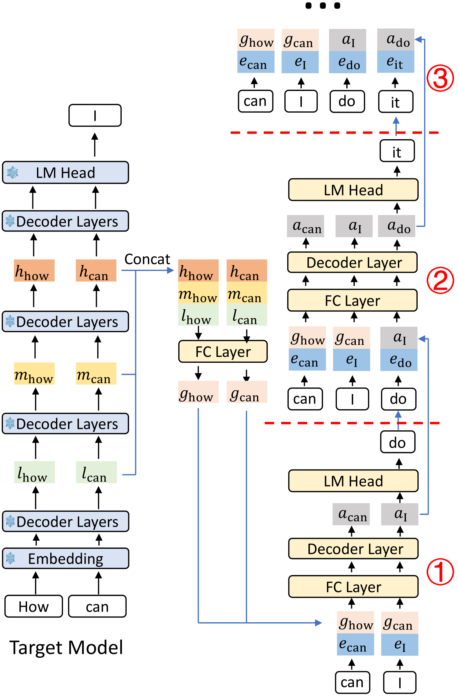
继续「How can I」的论文例子：目标已采出「I」，并备好 \(g_{\text{how}},g_{\text{can}}\)。 Step 1 输入 \(g\) 与 \(e_{\text{I}}\)，采出草稿「do」；Step 2 没有真值 \(g_{\text{I}}\)，改用 \(a_{\text{I}}\) 配 \(e_{\text{do}}\)； Step 3 同理用 \(a_{\text{do}}\) 配下一个 embedding。训练时这条链路被完整回放，所以推理时不会「第一次见自己的输出」。
4.4 缩放律重新出现
架构改完之后，增加 ShareGPT / UltraChat 等数据，加速比与接受长度都继续涨——论文称之为推理加速的 scaling law， 是旧版 EAGLE 没观察到的曲线。消融也很干净：去掉特征约束、再上融合特征，两步都对 \(\tau\) 和 speedup 有贡献。 端到端上，EAGLE-3 相对 EAGLE-2 大约再快 1.2×–1.4×；Vicuna-13B 的 HumanEval 上可到约 6.5×。 大 batch 下投机收益会收窄（算力闲置变少），但论文基于 vLLM 的吞吐实验里，EAGLE-3 在 batch 56 仍能打平甚至略优于无投机基线， 说明草稿质量提升把「破位点」往后推了。
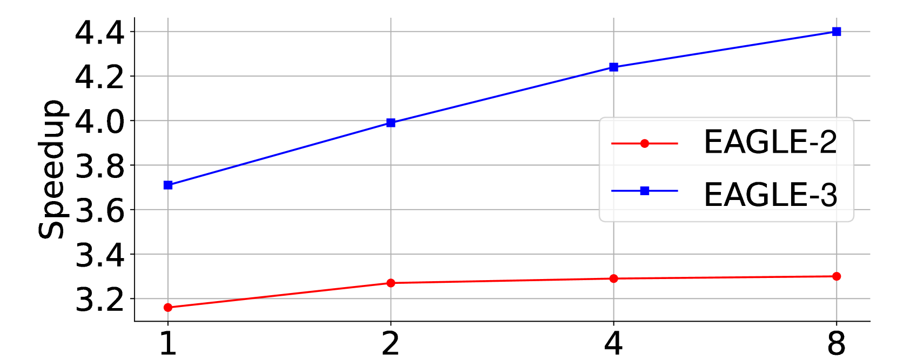
五、三代对照：每一跳改的是哪一层约束
| 版本 | 核心改动 | 草稿在学什么 | 树 / 验证 | 典型收益 |
|---|---|---|---|---|
| EAGLE | 特征级 AR + shifted-token | 拟合次顶层 \(f\)，再经共享 LM head 出 token | 静态树 + tree attention | ~2.7×–3.5×，显著超 Medusa / 独立小模型 |
| EAGLE-2 | 置信度驱动的动态树 | 同 EAGLE（训练不变） | Expansion / Rerank，按 \(V=\prod c\) 分配预算 | 同草稿器再提一截 \(\tau\) 与 wall-time |
| EAGLE-3 | 去 \(l_{\text{fea}}\) + 多层融合 + TTT | 直接拟合 token；输入可为 \(g\) 或自身 \(a\) | 继承 EAGLE-2 动态树 | 最高 ~6.5×；加速比随数据 scale |
六、实践时心里要有数的几件事
- 无损是算法保证，不是实测运气。 必须用严格拒绝采样；某些方法在 temperature>0 时放松接受条件，就不该再声称分布不变。
- 每个目标模型要训自己的草稿头。 官方与社区（SGLang SpecForge、vLLM 等）已覆盖一批主流模型；新架构 / MoE / 自定义注意力通常要从头训。
- 数据质量与 on-policy 很重要。 论文用目标模型在线生成回复当标签；生产里用真实流量 prompt 再生成，往往比单纯堆开源 SFT 更贴分布。
- 高并发会吃掉投机红利。 batch 变大后 GPU 闲置变少，破位 \(\alpha\) 上升；草稿越强，破位点越靠后——这正是 EAGLE-3 相对前代的工程价值之一。
- 串行起草仍是代价。 EAGLE 系草稿本质链式，\(T_{\text{draft}}\propto\) 深度，所以头通常只有一层。并行草稿（Medusa / MTP / DFlash 一脉）走的是另一条权衡曲线，本文不展开。
参考与扩展阅读
- EAGLE: Speculative Sampling Requires Rethinking Feature Uncertainty (Li, Wei, Zhang & Zhang, ICML 2024) 特征级自回归、shifted-token 消解不确定性、静态树验证的奠基之作。
- EAGLE-2: Faster Inference of Language Models with Dynamic Draft Trees (Li, Wei, Zhang & Zhang, EMNLP 2024) 用草稿置信度近似接受率，提出 Expansion / Rerank 动态草稿树。
- EAGLE-3: Scaling up Inference Acceleration of LLMs via Training-Time Test (Li, Wei, Zhang & Zhang, NeurIPS 2025) 去掉特征预测约束、多层特征融合与 Training-Time Test；加速比随数据缩放。
- Fast Inference from Transformers via Speculative Decoding (Leviathan, Kalman & Matias, ICML 2023) 投机解码与拒绝采样无损性的经典框架。
- SafeAILab/EAGLE（官方实现） 三代方法的参考实现；训练侧亦可对照 SGLang SpecForge 与各推理引擎集成。
- 交叉熵是什么：从信息量算到硬标签、软蒸馏 先讲清交叉熵从哪来、怎么算，再接到硬/软标签与 token 损失。
Discussion